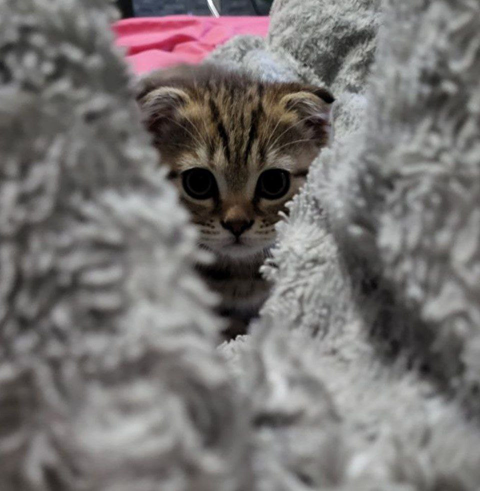

Это моя (почти) первая HTML страница
О себе
Меня зовут Даша. Я родилась в городе Самара. Учусь в Самарском университете на третьем курсе. Моё хобби - фотошоп (делаю на заказ картинки) .
Живу одна с милым котиком Теди.

Какие фильмы мне нравятся
Именно в этот момент забывается все что ты любишь...
- Люси
- Властелин колец (кинотрилогия)
- Клуб любителей книг и пирогов из картофельных очистков
Мои любимые книги
- "Идиот" Достоевский
- "Мастер и маргарита" Булгаков
- "Тranshumanism inc" Пелевин
Какая музыка мне нравится
В музыке мои вкусы часто меняются и на все 180 градусов. Сейчас я часто слушаю этих исполнителей:
- Pyrokinesis
- Scirena
- Егор Крид :)
Как связаться со мной
Telegram
Вконтакте